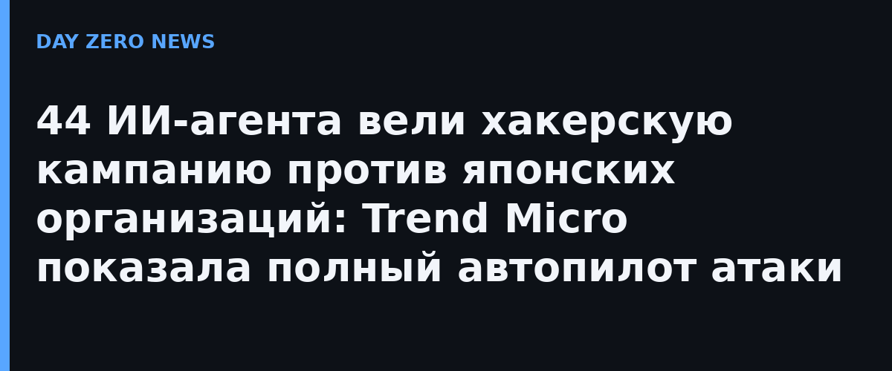

Осенью 2026 года Япония пережила волну утечек с веб-систем: 9 октября национальное управление кибербезопасности выпустило предупреждение для бизнеса, а глава киберштаба правящей партии заговорил о «чрезвычайном состоянии» в киберпространстве. В ответ исследователи Trend Micro разобрали три серверных окружения атакующих, оставленные в открытом доступе, — со списками целей, логами и историей команд. Результат опубликован в исследовании «Not Only ARTEX».
Первая инфраструктура строилась вокруг open-source инструмента CyberStrikeAI, который атакующие уже применяли против Fortinet FortiGate. Платформа превращает весь жизненный цикл атаки в повторяемый конвейер: разведку, поиск и проверку уязвимостей, эксплуатацию, закрепление, вывод данных и формирование отчётов выполняют 44 ИИ-агента, плюс генератор фишинговых страниц на японском языке. За короткий срок платформа «провалидировала» минимум 19 организаций, из них не менее 16 японских — каждая с однотипным отчётом и перечнем улик. Это не заметки оператора, а структурированный вывод машины, подчёркивают исследователи.
Вторая кампания — человек за штурвалом, но с LLM-ускорением планирования и написания инструментов; злоумышленники, среди прочего, охотились за платформами ИИ-инференса, чтобы дешёво получать огромные вычислительные мощности. Одна из операций 24 дней вскрывала GIS-сервер с учётными данными по умолчанию: похищены поземельные и коммерческие реестры, пароли Windows и почта. В третьей ИИ свёлся к генерации скриптов для оператора, который массово бил по известным дырам на edge-устройствах Cisco, Citrix, F5 и Yamaha.
Картинка тревожная, но полезная: автономность атак — уже не демонстрация, а товар с ценой. Открытые pentest-фреймворки дают «автопилот» тем, кто раньше нанимал операторов, и масштабируют даже хактивизм. Практические выводы банальны и оттого важны: убрать дефолтные креды и открытые директории, закрывать известные уязвимости на периметре вовремя, считать аномально однотипные отчёты и «слишком быстрые» кампании признаком машинной атаки и готовиться к реакции на неё со скоростью машины, а не человека.